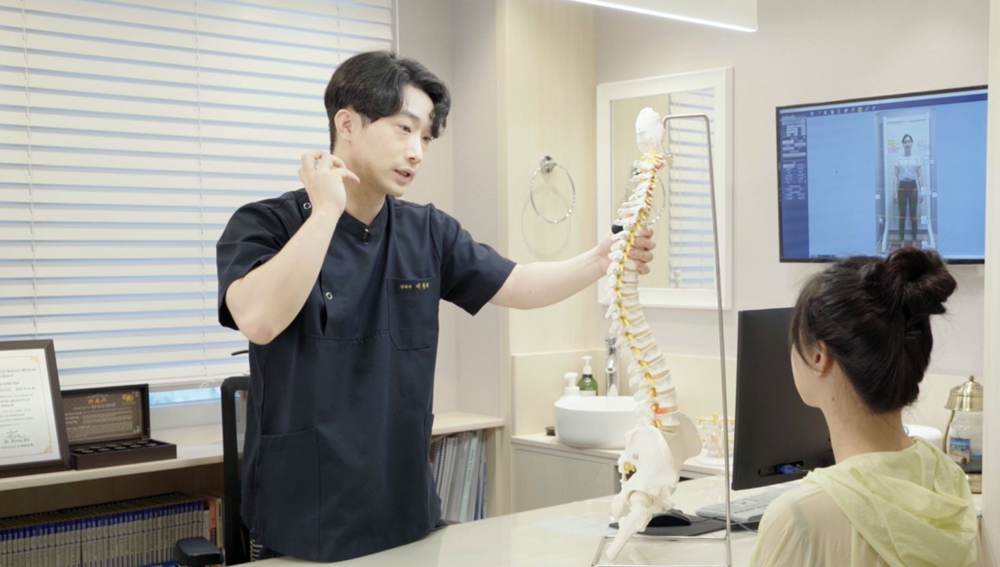
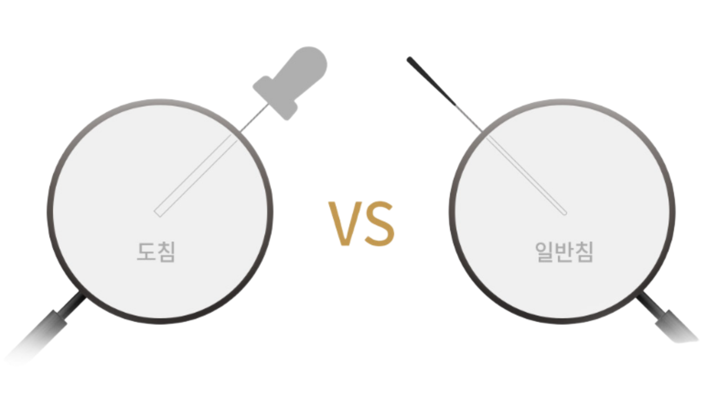
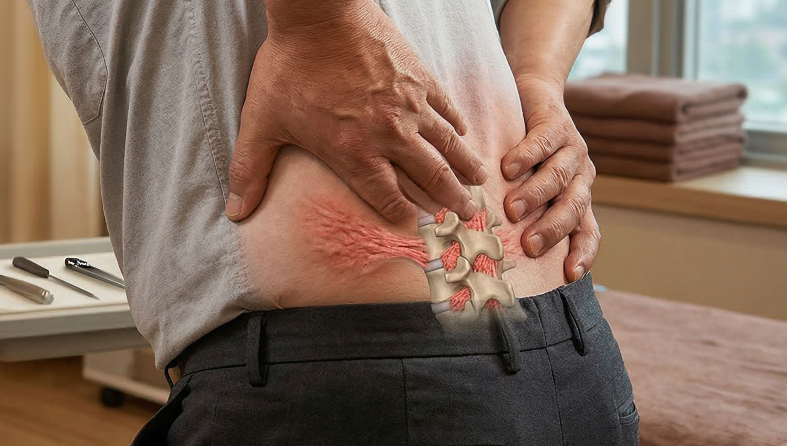
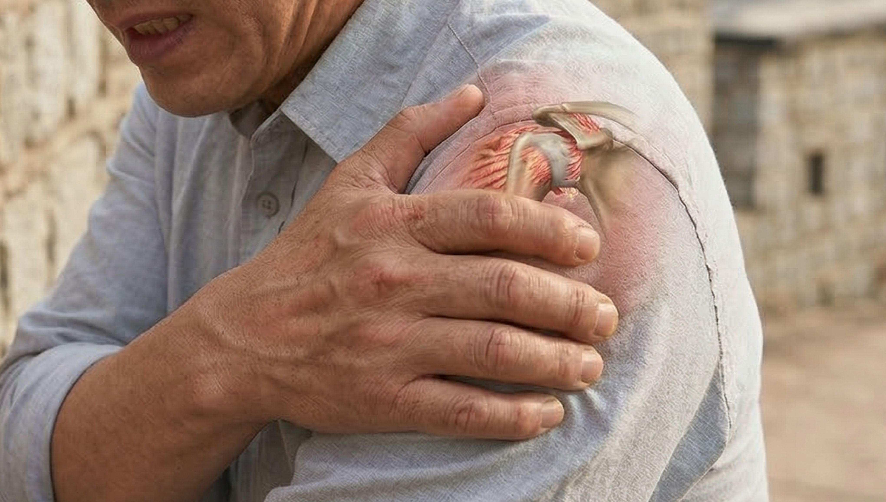
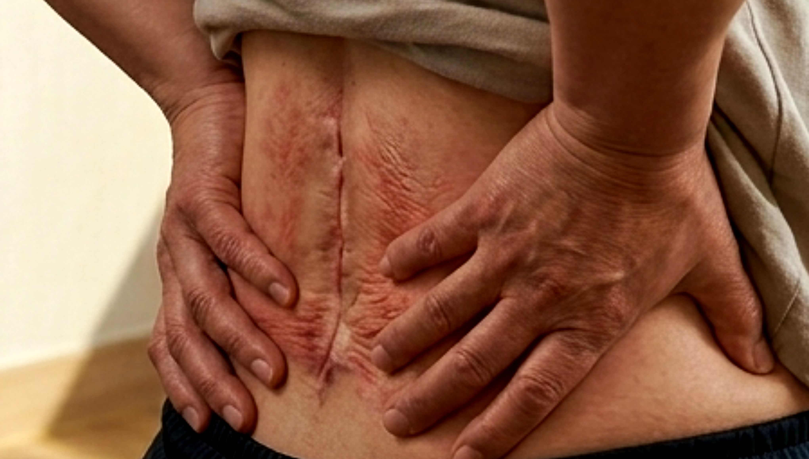
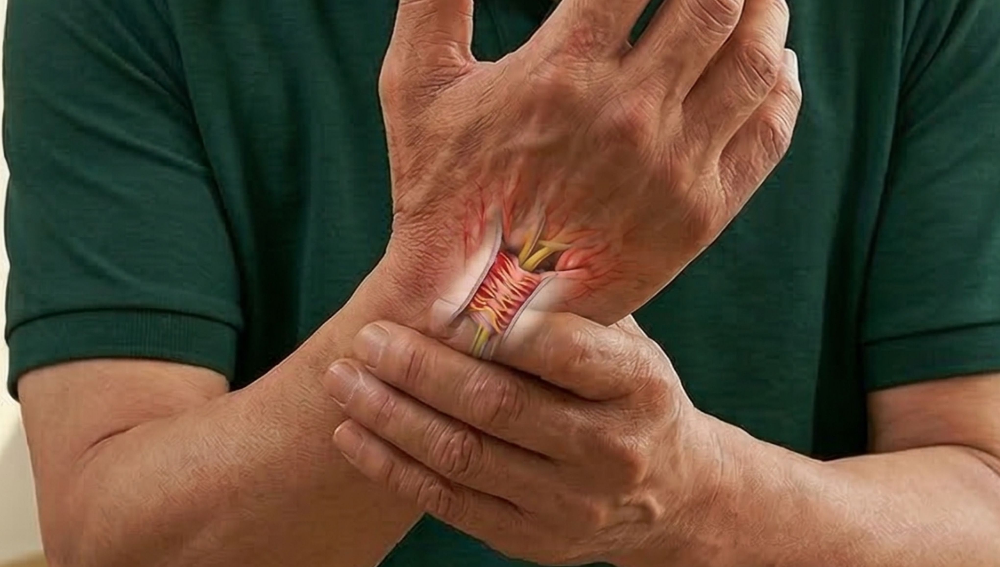

BODY-ALL WIKI
BODY-ALL WIKI
수원 도침 유착 박리술 추천:
굳어진 관절과 근육을 해방하는 한의학적 미세 수술요법

만성적인 통증으로 수원 척추병원이나 한의원을 전전하고 계신가요? 치료를 받아도 그때뿐이라면, 문제는 뼈와 근육 사이의 '유착(Adhesion)'에 있을 수 있습니다. 바디올은 굳어져서 제 기능을 잃은 관절과 근육에 초점을 맞추어, 한의학적 미세 수술요법인 도침을 활용해 유착된 조직을 박리하고 본래의 가동 범위를 회복시키는 정교한 치료를 시행합니다.
A. 주변 연부조직이 '본드'처럼 엉겨 붙어 뼈를 강하게 붙잡고 있기 때문입니다.
만성 염증이나 반복된 손상은 근육과 인대를 딱딱하게 유착시킵니다. 이 상태에서는 아무리 뼈를 맞추려 해도 유착된 조직이 뼈를 다시 틀어진 위치로 당겨버립니다. 바디올은 도침 유착 박리술을 통해 이 질긴 유착의 고리를 끊어냄으로써, 척추가 건강한 위치로 돌아갈 수 있는 '환경'을 먼저 조성합니다.

1. 도침 유착 박리술이란 무엇인가요?
도침(Acupotomy)은 끝이 납작한 칼날 형태인 특수 침을 사용하여 만성 질환의 원인이 되는 유착 부위를 직접 박리하는 정교한 시술입니다.

| 명칭 | 생김새 | 특징 | 목표점 |
|---|---|---|---|
| 도침 | 비교적 굵은 칼날 모양 | 굳어진 조직 박리 가능 | 유착된 만성 통증 원인부 |
| 일반침 | 비교적 얇은 둥근 끝 | 경혈점 자극 및 이완 | 근육 이완 및 순환 개선 |
2. 도침 치료가 반드시 필요한 이유
"유착은 단순히 굳는 것을 넘어 구조적 통증을 유발합니다."
- 유착이 된 조직은 변성이 일어나면서 조직 자체가 단단히 굳어버립니다.
- 근육과 인대에 유착이 발생하면 뼈의 골막을 잡아당기는 힘이 생겨 강한 통증이 발생합니다.
- 이 현상은 그 자체만으로도 통증을 증가시키고, 근육과 관절 부하를 높여 증상을 악화시키는 주범이 됩니다.
3. 바디올 도침 치료의 특별한 점: "기능 회복에 집중"
바디올은 단순히 통증 부위의 염증만 가라앉히는 것이 아니라, 신체의 '구조적 자유로움'을 되찾는 데 집중합니다.

- 유착된 관절의 해방: 굳어진 관절 주위 조직을 정교하게 박리하여 관절의 가동 범위를 정상화합니다.
- 교정 치료와의 시너지: 도침으로 조직을 유연하게 만든 후 시행하는 SART 교정은 훨씬 강력한 회복 효과를 발휘합니다.
- 정교한 타겟팅: 엑스바디 진단을 통해 유착이 가장 심한 포인트를 정확히 찾아 최소 자극 치료를 지향합니다.
4. 증상별 도침 치료 적용 대상
오래된 만성 통증과 난치성 질환일수록 도침의 유착 박리 기능이 빛을 발합니다.
| 분류 | 상세 내용 | 참고 이미지 |
|---|---|---|
| 만성 척추 질환 | 척추관 협착증, 만성 허리/목 디스크 방사통 |  |
| 유착성 관절 질환 | 오십견(동결견), 테니스/골프 엘보우, 족저근막염 |  |
| 수술 후 증후군 | 척추 수술 후 흉터 조직 유착으로 인한 통증 |  |
| 신경 포착 증후군 | 손목터널증후군, 좌골신경통 등 신경 통로 압박 |  |
5. 교육이사가 지도하는 교정 엘리트 팀의 전문성

도침은 고도의 숙련도가 필요한 한의학적 미세 수술요법입니다. 척추진단교정학회 교육이사인 이동해 대표원장과 매일 케이스를 발표하는 교정 엘리트 팀이 직접 집도하여 안전하고 정교한 시술을 보장합니다.